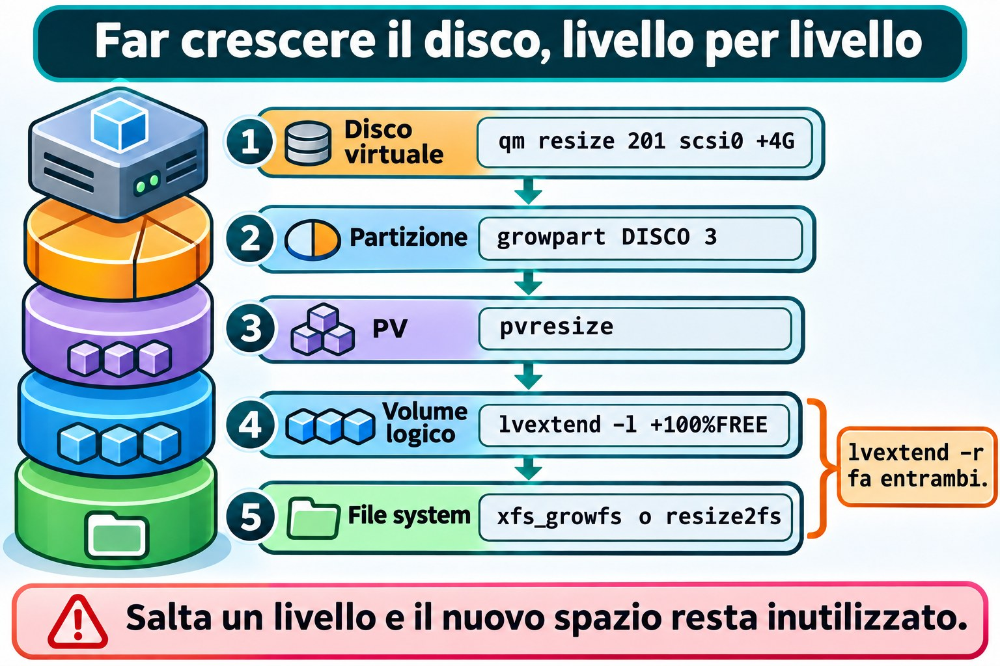
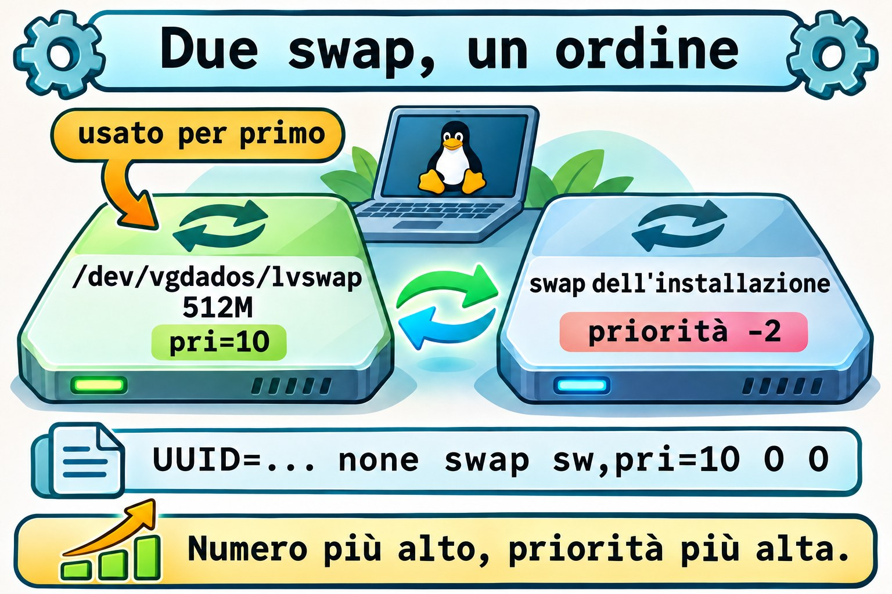
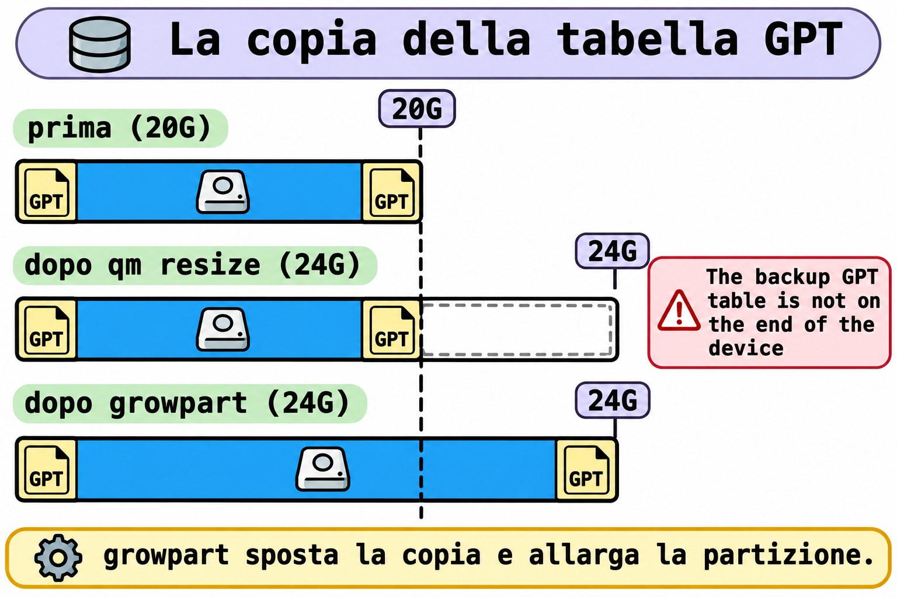

Lezione 9.7 · Crescere senza distruggere
In Windows "Estendi volume" risolve quasi tutto in due clic. In Linux lo spazio attraversa dei livelli: disco, partizione, volume fisico, volume logico e file system. Ognuno cresce a sua volta, con la macchina accesa. In questa lezione usi lo spazio libero del disco nuovo, crei un volume per i log e uno swap extra, e ingrandisci il disco di sistema senza perdere un byte. Alla fine arriva la Sfida dell'M9: un fstab sbagliato impedisce il boot.
Il cuore di questa lezione: usare lo spazio libero con una partizione nuova e
vgextend; creare LV, file system e swap, con la voce infstab; e far crescere il disco di sistema nell'ordineqm resize,growpart,pvresize,lvextend -r. Il resto è approfondimento.
| Scheda | |
|---|---|
| Modulo | M9 · Storage, lezione 7 di 7, con la Sfida del modulo |
| Quando | Settimana 14 |
| Alla fine | Fai crescere dischi e volumi in produzione simulata e ripari un fstab che ha abbattuto il boot |
| Prerequisiti | Lezioni 9.2, 9.4 e 9.6 |
| Durata | circa 3h, più 1h per la Sfida |
| Snapshot | m9a7-inicio e m9a7-fim su rocky-lab e debian-lab |
1 · Riscaldamento
Rispondi prima di leggere.
- Hai ingrandito il disco in Proxmox, e
df -hnon è cambiato. Quanti livelli restano da far crescere? - Si può ridurre un disco virtuale con
qm resize? - Una riga sbagliata in
/etc/fstabpuò impedire al server di avviarsi?
2 · Perché conta
| La richiesta | La risposta sbagliata | Cosa provoca |
|---|---|---|
| "La root è quasi piena" | Cancellare log alla cieca | Perdi le prove |
| "Ho ingrandito il disco e non è cambiato nulla" | Ingrandire di nuovo in Proxmox | Il disco cresce, e il file system resta della stessa dimensione |
| "Il server si è bloccato dopo il reboot" | Reinstallare | Era una riga di fstab |
| "Lo swap è sparito dopo il reboot" | Lanciare swapon ogni volta | Mancava la voce in fstab |
3 · Modello mentale
Crescere è ampliare un edificio dal basso verso l'alto. Prima il terreno (il disco virtuale), poi il lotto recintato (la partizione), il capannone (il PV, che LVM vede) e il tramezzo (l'LV). Per ultimi gli scaffali (il file system), che usano lo spazio solo dopo essere stati avvisati. Saltare un livello lascia lo spazio nuovo lì, ma inutilizzato.
Crescer o disco do sistema, uma camada por vez:
1. Disco virtual qm resize 201 scsi0 +4G no Proxmox
2. Partição growpart DISCO 3 até o fim do disco
3. PV pvresize PARTIÇÃO o LVM vê o espaço
4. LV lvextend -l +100%FREE pega o livre do VG
5. Sistema de arquivos xfs_growfs ou resize2fs o -r faz 4 e 5Ponte Windows
| In Windows | In Linux | Dove il paragone inganna |
|---|---|---|
| Gestione disco, "Estendi volume" | growpart + pvresize + lvextend -r | Qui sono passi separati, e controlli ognuno |
diskpart, extend | lvextend -l +100%FREE | L'LV può prendere spazio da qualsiasi PV del gruppo |
| Spazi di archiviazione | VG con più PV | Stessa idea: un pool |
| Modalità ripristino | Modalità di emergenza di systemd | Chiede la password di root; la root può arrivare in sola lettura |
4 · L'essenziale
Unità
Proxmox, fdisk, lvextend e df -h intendono G come GiB (1024³ byte), e non GB (1000³). +4G in qm resize sono 4 GiB.
Nuova partizione nello spazio libero
Nella 9.2 hai lasciato circa 1,5 GiB liberi su scsi1 (il disco della 2.2, ampliato a 4 GB nella 9.1). fdisk crea lì la partizione 4: n (nuova, accetta i valori predefiniti), t (tipo, alias lvm) e w (scrivere). Prima di scrivere, conferma il bersaglio tramite /dev/disk/by-id/: lo sdb di oggi può essere un altro domani.
Dallo spazio all'uso
| Voglio... | Comando |
|---|---|
| Trasformare la partizione in PV | sudo pvcreate PARTIÇÃO |
| Metterla nel gruppo | sudo vgextend vgdados PARTIÇÃO |
| Creare un LV di dimensione fissa | sudo lvcreate -L 1G -n lvlogs vgdados |
| Creare usando tutto il libero | sudo lvcreate -l 100%FREE -n NOME VG |
| Estendere LV e file system | sudo lvextend -r -l +100%FREE /dev/VG/LV |
| Solo il file system | sudo xfs_growfs PONTO oppure sudo resize2fs /dev/VG/LV |
-L chiede una dimensione (+1G somma), e -l chiede extent (+100%FREE usa tutto il libero). -r (--resizefs) chiama xfs_growfs su XFS e resize2fs su ext4. Senza di esso, l'LV cresce e il file system non se ne accorge.


Swap extra
Lo swap è l'area di disco che il kernel usa quando la RAM scarseggia. Un LV va bene:
| Voglio... | Comando |
|---|---|
| Formattare come swap | sudo mkswap /dev/vgdados/lvswap |
| Attivare subito, con priorità | sudo swapon -p 10 /dev/vgdados/lvswap |
| Vedere gli swap attivi | swapon --show |
Lo swap usa per prima l'area con la priorità maggiore (pri=); quello dell'installazione ha -2. In fstab: UUID=... none swap sw,pri=10 0 0.


L'intestazione GPT di riserva
Ogni tabella GPT ha una copia alla fine del disco. Quando il disco cresce, la copia resta in mezzo allo spazio nuovo, e fdisk -l avvisa: The backup GPT table is not on the end of the device. growpart sposta la copia alla nuova fine e allunga la partizione. E qm resize può solo ingrandire: pensa alla dimensione prima.


Rocky × Debian
| Rocky | Debian | |
|---|---|---|
growpart | dnf install cloud-utils-growpart gdisk | apt install cloud-guest-utils gdisk |
| LV della root | /dev/rl/root (XFS) | /dev/debian-lab-vg/root (ext4) |
| Far crescere la root | xfs_growfs, chiamato da -r | resize2fs, online, chiamato da -r |
| File dei dispositivi di LVM | /etc/lvm/devices/system.devices: pvcreate aggiunge il disco | lvmconfig --typeconfig full devices/use_devicesfile (il normale è 0) |
Su Rocky, un PV fuori dal file dei dispositivi resta invisibile: sudo lvmdevices --adddev PARTIÇÃO.
5 · Lab guidato
Passo 0 · Backup, snapshot e pacchetti. Lo snapshot non è un backup, e oggi tocchi il disco di sistema. In Proxmox, fai un backup nuovo e controlla:
vzdump 201 --storage PBS-LAB --mode snapshot
vzdump 202 --storage PBS-LAB --mode snapshot
pvesm list PBS-LAB --vmid 201
qm snapshot 201 m9a7-inicio
qm snapshot 202 m9a7-inicioTornare indietro (qm rollback) a uno snapshot fatto prima della 9.6 toglierebbe scsi2 e scsi3 dalla configurazione, e diventerebbero unused. Su rocky-lab:
sudo dnf install -y cloud-utils-growpart gdisk
rpm -q cloud-utils-growpart gdisk
lsblk -f
sudo vgs vgdadosSu debian-lab, usa sudo apt install -y cloud-guest-utils gdisk e controlla con dpkg -s cloud-guest-utils gdisk | grep Status. vgdados deve avere due PV, e lvapp deve essere in /srv/app.
Passo 1 · Partizione 4 nello spazio libero. Su rocky-lab, definisci il bersaglio con il nome stabile e controlla, prima di scrivere:
D1=/dev/disk/by-id/scsi-0QEMU_QEMU_HARDDISK_drive-scsi1
readlink -f $D1
lsblk -o NAME,SIZE,TYPE,FSTYPE,LABEL,MOUNTPOINTS $D1
sudo fdisk -l $D1readlink -f mostra lo /dev/sdX di oggi, e lsblk deve elencare solo le partizioni 1, 2 e 3 della 9.2. Se qualcosa non torna, fermati. Solo allora:
sudo fdisk $D1Dentro fdisk: n, Invio, Invio, Invio, poi t, Invio (partizione 4), lvm, e w.
Created a new partition 4 of type 'Linux filesystem' and of size 1.5 GiB.
Changed type of partition 'Linux filesystem' to 'Linux LVM'.
The partition table has been altered.Poi, sudo udevadm settle e lsblk $D1: la partizione 4 compare, con circa 1,5G.
Passo 2 · PV e VG.
sudo pvcreate ${D1}-part4
sudo vgextend vgdados ${D1}-part4
sudo vgs vgdados
sudo pvs VG #PV #LV #SN Attr VSize VFree
vgdados 3 1 0 wz--n- <7.49g <5.49gI valori variano di pochi MiB. pvs mostra i tre PV: uno su partizione e due su dischi interi, e funzionano allo stesso modo.
Passo 3 · LV dei log in XFS.
sudo cp -a /etc/fstab /etc/fstab.bak
sudo lvcreate -L 1G -n lvlogs vgdados
sudo mkfs.xfs /dev/vgdados/lvlogs
sudo mkdir -p /srv/logs
UUID=$(sudo blkid -s UUID -o value /dev/vgdados/lvlogs)
echo $UUIDecho deve mostrare un UUID. Se è vuoto, non proseguire: una riga senza UUID in fstab è il prossimo disastro. Con l'UUID:
echo "UUID=$UUID /srv/logs xfs defaults,nofail 0 0" | sudo tee -a /etc/fstab
sudo systemctl daemon-reload
sudo findmnt --verify
sudo mount -a
findmnt /srv/logs
df -h /srv/logsfindmnt --verify valida il file. mount -a monta ciò che è in fstab e non è ancora montato. Output atteso: /srv/logs su /dev/mapper/vgdados-lvlogs, xfs, circa 1G.
Passo 4 · Swap extra.
swapon --show
sudo lvcreate -L 512M -n lvswap vgdados
sudo mkswap /dev/vgdados/lvswap
SW=$(sudo blkid -s UUID -o value /dev/vgdados/lvswap)
echo $SW
echo "UUID=$SW none swap sw,pri=10 0 0" | sudo tee -a /etc/fstab
sudo systemctl daemon-reload
sudo swapon -a
swapon --show
free -hNAME TYPE SIZE USED PRIO
/dev/dm-1 partition 2G 0B -2
/dev/dm-4 partition 512M 0B 10swapon -a attiva ciò che fstab elenca. Il nuovo ha priorità 10, sopra il -2 dell'originale, e free -h somma i due.
Passo 5 · Ingrandire il disco di sistema, in Proxmox.
qm config 201 | grep scsi0
qm resize 201 scsi0 +4G
qm config 201 | grep scsi0La riga di scsi0 passa da size=20G a size=24G. Se Proxmox rifiuta, leggi il messaggio: non cancellare snapshot solo per farlo passare. Ripeti per la 202.
Passo 6 · Rocky: dal disco al file system. Su rocky-lab:
D0=$(readlink -f /dev/disk/by-id/scsi-0QEMU_QEMU_HARDDISK_drive-scsi0)
echo $D0
lsblk $D0
sudo fdisk -l $D0 | head -n 12
sudo pvs -o pv_name,vg_namelsblk mostra 24G sul disco, con la partizione del PV alla vecchia dimensione. fdisk -l avvisa dell'intestazione GPT. pvs mostra la partizione del PV di rl: normalmente la 3, ma controlla. Sostituisci il 3 con il tuo numero:
sudo growpart -N $D0 3
sudo growpart $D0 3
sudo pvresize ${D0}3
sudo vgs rl
sudo lvextend -r -l +100%FREE /dev/rl/root
df -h /-N (--dry-run) mostra soltanto cosa farebbe growpart. Output atteso: CHANGED: partition=3 ..., vgs con circa 4g in VFree, e Logical volume rl/root successfully resized. df -h / mostra i 4G in più, senza smontare nulla.
Passo 7 · debian-lab. Ripeti i passi da 1 a 4 e il 6 (il Passo 5 ha già fatto crescere il disco della 202), con /dev/debian-lab-vg/root al posto di /dev/rl/root, e sudo vgs debian-lab-vg. -r chiama resize2fs.
Decidi 1
lvextend -r -l +100%FREE ha risposto New size (... extents) matches existing size dopo il qm resize. Cosa fai?
A) Rilanciare qm resize. B) Controllare lsblk: la partizione del PV forse non è cresciuta; growpart e pvresize. C) Ricreare l'LV.
Scegli un'opzione prima di continuare.
| Se hai scelto | Risultato | Perché |
|---|---|---|
| A | Non cambia nulla | Il disco è già cresciuto |
| B | Giusto | Lo spazio si è fermato a un livello |
| C | Perdi i dati | Ricreare cancella |
Da ricordare: trova il livello che si è fermato con lsblk, pvs e vgs.
Decidi 2
Ti servono 3G di log in un VG con 2G liberi, e un disco nuovo è in Proxmox. Qual è la strada?
A) lvcreate -L 3G e incrociare le dita. B) Aggiungere il disco, pvcreate, vgextend, e solo dopo lvcreate. C) Due LV, da 2G e da 1G.
Scegli un'opzione prima di continuare.
| Se hai scelto | Risultato | Perché |
|---|---|---|
| A | Errore di spazio | Il VG non ha 3G |
| B | Giusto | Il pool aumenta, e poi l'LV nasce intero |
| C | Aggira il problema | Due punti di montaggio e due attenzioni |
Da ricordare: prima il pool.
6 · Rompi e ripara
Guasto 1 · L'LV è cresciuto, lo spazio no
sudo lvextend -L +256M /dev/vgdados/lvlogs
df -h /srv/logsSintomo: lvextend termina senza errori, e df -h resta a 1G.
Indagine: sudo lvs vgdados mostra lvlogs con 1,25g, e df no.
Causa: mancava -r. XFS, lo scaffale, non è mai stato avvisato.
Riparazione: sudo xfs_growfs /srv/logs (XFS cresce tramite il punto di montaggio). Su ext4, sarebbe sudo resize2fs /dev/VG/LV. L'LV resta con 1,25G, e XFS non si riduce mai.
Guasto 2 · La riga di swap con UUID sbagliato
sudo cp -a /etc/fstab /etc/fstab.m9a7
echo 'UUID=00000000-0000-0000-0000-000000000000 none swap sw,pri=5 0 0' | sudo tee -a /etc/fstab
sudo swapon -aSintomo: swapon: cannot find the device for UUID=0000....
Indagine: sudo blkid /dev/vgdados/lvswap mostra l'UUID reale, e tail -n 3 /etc/fstab, l'altro.
Causa: errore di battitura, oppure UUID copiato dal disco sbagliato.
Riparazione: sudo cp -a /etc/fstab.m9a7 /etc/fstab e sudo systemctl daemon-reload.
Guasto 3 · Il VG non ha spazio
sudo lvcreate -L 20G -n lvgrande vgdadosSintomo: Volume group "vgdados" has insufficient free space (957 extents): 5120 required.
Indagine: sudo vgs vgdados: la colonna VFree. Ogni extent è da 4 MiB, e i tuoi numeri saranno altri.
Causa: hai chiesto più di quanto il pool abbia.
Riparazione: chiedi meno oppure fai crescere il pool con pvcreate e vgextend.
Pulizia
sudo rm /etc/fstab.m9a7
sudo lvs vgdadoslvgrande non esiste. lvlogs e lvswap restano, e fstab ha solo le righe vere.
7 · Trappole
| Trappola | Cosa succede | Come evitarla |
|---|---|---|
fdisk sul disco sbagliato | Cancella un'altra tabella | by-id e lsblk prima |
lvextend senza -r | Lo spazio c'è e non si vede | Usa -r |
Riga senza nofail | Un disco assente abbatte il boot | nofail sui dischi dati |
swapon senza riga in fstab | Lo swap sparisce al reboot | Voce con UUID |
Aspettarsi che qm resize riduca | Può solo ingrandire | Decidi la dimensione prima |
8 · Quiz
Rispondi senza guardare. Le soluzioni sono alla fine della lezione.
- Qual è l'ordine dei cinque livelli per far crescere il disco di sistema?
- Cosa fa
-rinlvextend? - Perché
fdisk -lavvisa del GPT dopoqm resize? - Cosa cambia
pri=10? - Perché
-rfunziona su entrambe le VM? - Perché il primo comando in modalità di emergenza è di solito
mount -o remount,rw /?
9 · Promemoria
Da sapere a memoria:
| Voglio... | Comando |
|---|---|
| Far crescere il disco | qm resize ID scsi0 +4G |
| Far crescere la partizione | sudo growpart DISCO N |
| LVM vede lo spazio | sudo pvresize PARTIÇÃO |
| LV e file system | sudo lvextend -r -l +100%FREE /dev/VG/LV |
Validare fstab | sudo findmnt --verify |
Da consultare:
| Voglio... | Comando |
|---|---|
| Simulare growpart | sudo growpart -N DISCO N |
| Far crescere XFS o ext4 | xfs_growfs PONTO, resize2fs LV |
| PV invisibile su Rocky | sudo lvmdevices --adddev PARTIÇÃO |
Flashcard:
- Ordine di crescita → disco, partizione, PV, LV, file system.
qm resize→ non riduce.
10 · Checklist e chiusura
- [ ] Uso lo spazio libero: partizione, PV e
vgextend - [ ] Creo LV, file system e mount tramite UUID
- [ ] Attivo uno swap extra, con riga in
fstab - [ ] Faccio crescere il disco di sistema, livello per livello
- [ ] Valido
fstabconfindmnt --verifyprima di riavviare
Ultimo esercizio, senza guardare la lezione: su debian-lab, crea un LV da 256 MiB in ext4, montalo in /srv/teste tramite UUID, estendilo a 512 MiB con un solo comando, dimostralo con df -h e rimuovi tutto, compresa la riga di fstab.
Snapshot di fine (in Proxmox):
qm snapshot 201 m9a7-fim
qm snapshot 202 m9a7-fim11 · Nella vita reale
Missione, sola lettura. Su un server Linux che amministri (o con autorizzazione), lancia solo:
lsblk -f
sudo pvs; sudo vgs; sudo lvs
df -hT | grep -v tmpfs
swapon --show
grep -v '^#' /etc/fstab
sudo findmnt --verifyDomande a cui rispondere:
- Quanto spazio libero c'è nei VG?
- Qualche disco dati è senza
nofailinfstab? - Lo swap è in
fstab?
Diario: annota ciò che merita attenzione, senza modificare nulla.
12 · Approfondire quando vuoi
man growpart,lvextend,fstab,swapon,findmnt: le opzioni complete.- Red Hat Documentation: "Configuring and managing logical volumes" e "Managing storage devices".
- Debian Wiki (LVM), kernel.org e util-linux.
Sfida dell'M9 · Il boot che non arriva
La missione: una riga sbagliata in
/etc/fstabfa precipitare rocky-lab in modalità di emergenza. Entra dalla console, ripara con il minimo di modifiche e lascia la macchina che si avvia da sola.
Senza passo passo. I suggerimenti sono nelle Soluzioni.
Prima di cominciare: in Proxmox, qm snapshot 201 m9-desafio-inicio. Poi, monta lo scenario su rocky-lab, senza cercare di capire:
sudo cp -a /etc/fstab /etc/fstab.desafio
sudo mkdir -p /srv/relatorios
echo 'UUID=1111aaaa-2222-bbbb-3333-cccc4444dddd /srv/relatorios xfs defaults 0 0' | sudo tee -a /etc/fstab
sudo rebootIl problema: la macchina non si avvia. Apri la console della VM 201 in Proxmox, aspetta i 90 secondi del timeout, e usa la password di root.
Requisiti:
- Ripara dalla console: non ripristinare lo snapshot e non usare un altro disco.
- Dopo il boot, annota in
~/m9-desafio.txtla causa, il comando che l'ha rivelata e la correzione. - Non cancellare le righe di
/srv/dados,/srv/arquivo,/srv/app,/srv/logse dello swap extra./srv/trocaè una unit, fuori dafstab: non toccarla.
Criteri di accettazione:
- [ ] rocky-lab si avvia senza intervento, a un nuovo
reboot - [ ]
sudo findmnt --verifynon mostra errori - [ ]
for m in /srv/dados /srv/app /srv/logs; do findmnt -n $m; donemostra i tre mount - [ ]
grep relatorios /etc/fstabmostra la riga commentata - [ ] Il resoconto ha la causa e la prova
Alla fine:
sudo sed -i '/relatorios/d' /etc/fstab
sudo rmdir /srv/relatorios
sudo rm /etc/fstab.desafioIn Proxmox: qm snapshot 201 m9-desafio-fim.
Hai chiuso l'M9. Ora partizioni, formatti, monti in modo persistente, tieni d'occhio lo spazio, usi LVM, fai crescere senza distruggere e ripari un boot rotto. Il prossimo modulo comincia dalla Lezione 10.1 · Account.
Soluzioni commentate
Riscaldamento
- Tre: la partizione, il PV e l'LV (con il file system, che
-rcopre). - No.
qm resizepuò solo ingrandire. - Sì. Se
fstabpunta a un dispositivo assente, senzanofail, systemd fa fallirelocal-fs.targete cade in emergenza.
Quiz
- Disco virtuale, partizione, PV, LV, file system.
- Chiama l'utility del file system (
xfs_growfsoresize2fs) subito dopo aver esteso l'LV. - Perché la copia dell'intestazione GPT resta alla fine della dimensione vecchia.
growpartla sposta alla nuova fine. - Lo swap con il numero più alto viene usato per primo. Il
-2dell'installazione entra solo dopo. - Sceglie il programma in base al tipo di file system: XFS su Rocky, ext4 su Debian.
- La root può essere in sola lettura: è normale quando si entra da GRUB (
systemd.unit=emergency.targetoinit=/bin/bash). Senzaremount,rw, l'editor non scrivefstab. Se è già scrivibile, il comando non fa male: controlla confindmnt -o TARGET,OPTIONS /.
Suggerimenti per la Sfida
Leggine una alla volta.
- Primo: dalla console,
systemctl --failedmostrasrv-relatorios.mountfallito, ejournalctl -xb -p warningmostraTimed out waiting for device /dev/disk/by-uuid/1111aaaa-...eDependency failed for /srv/relatorios. - Accesso: su Rocky, la modalità di emergenza chiede la password di root. Poi, per sicurezza,
mount -o remount,rw /. - Indagine:
findmnt --verifyindica l'UUID che non esiste. - Correzione minima:
sed -i '/relatorios/s/^/#/' /etc/fstab,systemctl daemon-reload,mount -aereboot. - Su Debian: anche la modalità di emergenza chiede la password di root. Se l'account è bloccato (installazione solo con sudo),
suloginrifiuta. Allora, nel menu di GRUB, premie, aggiungiinit=/bin/bashalla fine della rigalinuxe usa Ctrl+X. Lanciamount -o remount,rw /, correggifstab, e concludi consyncereboot -f.